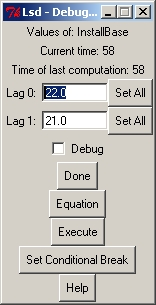
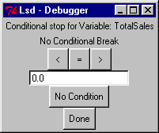
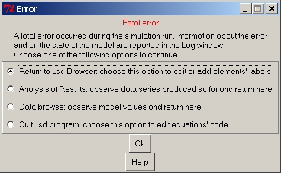

HyperManual Lsd
Windows Lsd FAQ's
Lsd Debugger

How to activate the Debugger
The Debugger starts when two conditions are met:
- the simulation enters in the Debug Mode
- a Variable marked to be debugged is just computed, and
To enter the Debug Mode users can set a positive value in the
appropriate
entry in the Simulation Settings
(menu Run) before launching a simulation.
New
values for the time step when activating the Debug Mode can
also
be set using the button Until in the debugger
window. The Debug Mode is also activated when clicking on
the
Debug
button of the Log window during a simulation
run.
In the first case, the very first step of the simulation will be run in
Debug Mode, while in the second case this happens only at the time step
in which the button was pressed. Of course, the simulation exit the
Debug
Mode when, during a debugging session, the user click on button
Run to continue a simulation (or Quit to abort a simulation).
A Variable is marked to be debugged before a simulation using a the
main
Lsd Browser, by double-clicking on the
Variable in the Variables list. In this case, the option chosen
is set for all the copies of that Variable (i.e. all the Variables
contained
the copies of that Object type). The option is also saved in the
configuration
file, so that subsequent configurations will maintain this option. Note
that having too many Variables to be debugged is not, in general, a
good
choice.
Users can also set a Variable to be debugged from the Debug
window, double-clicking on the Variable of interest. In this case,
only the copy clicked will be affected by the option chosen, while
other
copies of the same Variable will not change this option.
The Debugger can also be activated when a serious
error
forces
to abort the simulation.
Finally, the debugger is activated when a conditional
break is met, independently from either the Debug Mode and the
mark
for debugging on the Variable having a conditional break.
How to operate the Debugger Window
The window shows the content of a single copy of an Object, that is
the Object whose Variable has been just computed and that caused the
simulation
to be interrupted. The Debugger window is composed
by:
menu Help
This menu permits to access this Help page, and the model specific
documentation, the model report
and the model help. These
documents
provide all the information on the model, showing, for example, the
acual
code used to compute the equation for the Variable that caused the
simulation
to be interrupted.
Title
The first row shows the label of the Variable that causes the
simulation
to be interrupted, its just computed value (that can be modified) and
the
current time step of the simulation.
This line is not present in the Data Browse
window,
replaced by the button to exit the Data Browsing session.
Simulation Control
Buttons
Three buttons controls the flow of the simulation after the debugging
session. Naturally, these buttons are not present in the Data
Browsing window.
Stack Info (in
Debugger
Control buttons)
Set on and off the option to issue information on the stack, useful
to determine the actual order of execution of the equations. See Lsd
simulation manager.
Print Stack (in
Debugger
Control buttons)
Prints the state of the stack, showing which Variables are currently
under computation. That is, the set of Variables whose computation
started
but is still not completed because other Variables needed to be
computed
first.
v[...] (in Debugger
Control
buttons)
Print the set of intermediate values used in the equation. These values
may be used to re-construct the internal computation of the Variable
just
executed, using the code for the Variable available from the Model
Report
in menu Help.
These values are available only if the simulation is running in Debug
Mode (see help on How to activate the debugger).
Therefore, may not be reliable in case the Debugger was activated
because
of a conditional break.
Step (in Debugger
Control
buttons)
Shortcut: s
Continues the simulation (remaining in Debug Mode) until another
Variable
to be debugged is updated, either in the same or in a subsequent time
step.
Until (in Debugger
Control
buttons)
Shortcut: i
Ask for a time step and continue the simulation in normal mode until
that time step, when the Debug Mode is re-activated, causing for the
simulation
to be interrupted at the first Variable to be debugged encountered.
Run (in Debugger Control
buttons)
Shortcut: r
Continues the simulation exiting the Debug Mode, and therefore the
simulation is not interrupted until button Debug is pressed, a
conditional
break is met, or the simulation is terminated. Note that the Stack
Info option remains in the setting chosen by the user.
Quit (in Debugger
Control
buttons)
Shortcut: q
Abort the simulation. The current time step is terminated before
exiting
the simulation.
Analysis (in
Debugger
Control buttons)
Shortcut: a
Open the Analysis of Result module,
permitting
users to analyse every series produced by the simulation up to the
previous
time step.
Object type and list of
ancestors
These labels tell the name of the Object shown and its position in
the model structure.
This Debugger window works similarly to the Lsd
main
Browser
in showing the Object content, but consider one single copy of an
Object
instead of an Object type as in the Browser.
The list report the instance nummber both for the Object currently
shown (the last in the list) and for the ancestors. The second number
is
the whole number of instances in that branch of the model.
NEW: Clicking on the label Object Instance the user can
modify the number of Objects of the type currently shown. It is
possible
to change this number both before running a simulation and during a
simulation.
All values for the Parameters and Variables in the Objects created will
be copied from an example instance of the Object. The user can select
which
example instance to use. See the manual
page to edit the number of Objects in the model.
Model Browsing Buttons
The Debugger window starts by showing the content
of the Object whose Variable caused the simulation to stop. Users can
then
move the Debugger to show any other Object (this may be relevant for
understanding
the actual working of Lsd equations; see the help page on using
Objects in Lsd equations).
A set of buttons is used to browse through the model. Note the the
model
is shown "physically", and therefore user can explore each individual
instance
for each Object, and not only one representative element as in the main
Lsd Model Browser.
Up (in Debugger browsing buttons)
Shortcut: u.
Move to the parent Object of the currently shown one. No action if
the Root (upmost Object) is shown.
Next (in Debugger browsing buttons)
Shortcut: n.
Move to the Object following the currently shown one, if exists. Note
that the "next" Object can be either an Object of the same type or one
of different type. No action if there is no other Object after the one
showed.
Next Type (in debugger browsing buttons)
Shortcut: t.
Move to the Object following the Objects of the same type as the
currently
shown one. Can be useful if, for example, the browser is showing the
first
of thousands of instances of the same type, and user wants to observe
the
next type after this set. No action if there are no other type of
Object
following.
Last (in debugger browsing buttons)
Shortcut: l.
Move to the last copy of the same Object type as the currently shown
one.
Down (in debugger browsing buttons)
Shortcut: d.
Move to the first Object descending from the currently shown one. No
action if the Object does not have descendants.
Search For (in debugger browsing buttons)
Shortcut: f.
A window requests the name of one variable and one numerical value.
The Debugger moves to show the Object containing the indicated variable
with the indicated value. This allows, for example, to observe
instances
of Object that are "far away" in the model (say, the 1000th
element in a group of Object). If more than one Object type contains
the
requested variable with the requested value, the system shows the
"closest"
one. In Lsd, the distance among Objects is computed according to the
number
of Objects necessary to pass through using the following research
strategy:
- starting from one Object explore the descendants;
- explore the "siblings" (i.e. descendants from the same ancestor);
- explore the ancestor; explore the "siblings" of the ancestor etc.
See Lsd function search_var(…)
in the Modellers Manual or the function cal(...)
for further details.
Object Content
In the Debugger window a two-column list shows the
Variables and Parameters contained in the Object shown.
In each column, a line shows:
- Label of the Variable or Parameter;
- Current value (for Variables, it is the lastly computed value);
- Lastupdate. This field is not used for parameters. For Variables
it
reports
the simulation time step during which the Variable has most recently
computed
its equation, and therefore obtained its most update value. Comparing
the
value of Lastupdate for a Variable with the current time step of the
simulation
it is possible to know whether the Variable will be computed during the
current simulation step or if it has already happened.
NEW: Clicking with the right button of the mouse on the label it
is possible to activate the function Set All. for the selected
item.
The user will be able to modify the values for all the Parameters or
Variables
selected in the model, using the automatic initialization. Note that
the
Set
All function recognize the instance of the Object currently
occupied,
and therefore will be easy to change the values of only one a branch in
the model.This possibility can be used both before running a simulation
and at any one time during a simulation run. The time tag LastUpdate of
the Variables will not be affected by this change. See the manual for
the
Set
All function for further details.
Double-clicking on the labels it is possible to observe and edit the
value(s) of the Variable (one value, in case of Parameters, and all
lagged
values for Variables). The window is as shown below:

The window shows one entry for each lagged value (in case of Variables
also used with lagged values) or one single entry for Parameters. The
entry
shows the current value and users can edit it. Pressins on the buttons
Set
All it is possible to change all, or some, of the values
for
the corresponding Variable or Parameter in the model. Beware that the
change
ignores the actual time of last computation for each element.
The other elements of the window are:
- The checkbox Debug
allows
to
set the shown Variable to be debugged. That is, next time the variable
is computed and the debug is requested the simulation will be
interrupted.
- The button Done
returns to
the
main Debugger window.
- The button Equation
shows
the
code for the equation in a new window.
- The button Execute
forces
the
variable to be updated. Note that this command may produce no result if
the variable has been already updated in the current time step (if the current
time equals the time of last computation).
- The button Set Conditional Break
allows
to define conditional breaks for the simulation, according to
particular
values of the Variable shown (see help on conditional
breaks).
- The button Help
shows this
manual page.
Set Conditional Breaks
It is possible to interrupt the simulation (even when the it is not
running in Debug Mode and for Variables not marked to be debugged), by
setting conditional breaks. That is, users can interrupt the simulation
in case the value resulting from an equation is equal to, lesser than
or
greater than a determined value. Lsd does not allow to save conditional
breaks in the Lsd model files, and therefore it is possible to set them
only during a Debugging session.
The window for setting conditional breaks is reached by pressing the
appropriate button after having double-clicked on the Variable of
interest.
It appears as follows:

Users are requested to insert a numerical value and to determine
under
what conditions the simulation has to stop. Three conditions are
available:
lesser ten, larger than or equal to the inserted value. The second line
shows the condition currently used. Only one conditional break can be
defined
for each Variable, but more Variable can be assigned conditional breaks
(though conditions cannot refer to each other).
In order to satisfy a conditional break it is not necessary that the
simulation is run in Debug Mode. When a conditional break is satisfied,
the simulation is interrupted and the Object containing that Variable
is
shown in the Debugger window.
Lsd Simulation Manager
In order to use the Lsd debugging utilities it is crucial to understand
how a simulation is run in Lsd. When a simulation is started, the model
loaded in Lsd is passed to the Lsd simulation manager.
When the simulation starts, a global C++ variable is initialized to
1; this variable is the current time step counter, and at each step it
is increased of one unit.
The Lsd simulation manager follows a simple cycle for each time step
and for each Object in the model:
- Take the one Object;
- take one Variable (no Parameter);
- execute the associated equation;
- if the equation requests the updated (zero lag) value of any
other
Variable,
and this has not been computed yet, execute its equation;
- take another Variable of the same Object and go to 3
This cycle is performed firstly for the Root of the model, and,
recursively,
for each of its descendant, their own descendants and so on. Note that
the equation for one Variable can be computed under two circumstances:
- The Lsd simulation manager requests its value during the normal
updting
cycle, or
- Another Variable has requested its updated value before of the
standard
updating cycle has reached it.
In the second case the equation that caused the Variable to be updated
is interrupted until the other equation is completed. That is, the
first
equation's computation is placed "on the stack" and is resumed only
when
the second equation is completed. Of course, the second equation can
itself
trigger the computation of still other equations, and therefore it can
be placed again on the stack (second level) until the values it
requests
are obtained.
It is a common error to write models' equations that create a
dead-lock.
That is, in the simplest case, you have two equations like:
X=F(Y)
and
Y=G(X)
Of course, it is necessary that either F(.) or G(.) use a lagged
value,
otherwise the set of the two equations is not computable.
Similar errors are easy even in slightly complex models, when a long
chain of equations reciprocal activations can hinder the possibility to
immediately see the source of the error.
Model writers can make use of the stack info provided, on request,
by the Lsd simulation manager. At some cost of speed, when the
requested value for the stack is higher than one (it can be set either
in the Simulation
Setting before starting a simulation run, or in the debugger's
window
during a Debugging session), the simulation manager prints out in the
Log
window one line for each equation just computed. When this option is on
the simulation manager issues the stack level at which the equation is
computed. That is,
- stack level 1 means that the equation has been computed because
of the
system request (normal updating cycle);
- stack 2 means that the equation has been computed as consequence
of a
request
made by an equation computed at stack 1;
- ...
- stack n means that the equation has been computed as consequence
of a
request
made by an equation computed at stack n-1;
The line concerning an equation is like:
VarLabel (4) =
3.14
t = 18, stack = 6, caller = ObjLabel, triggering var. = VarTwo
meaning that:
- the Variable VarLabel has just
being
computed;
- it is contained in the fourth Object in the group of Objects of
the
same
type;
- the result of the equation is 3.14
- it is the time step 18 of the simulation;
- it is computed at stack 6 (because requested by another Variable,
which,
in turn, was computed at stack 5);
- the Object that requested its value if of type ObjLabel
(this field reports SYSTEM in case the Variable is computed because
requested
by the Simulation Manager)
- the Variable in whose equation it was requested is VarTwo
(this field is not present in case the Variable is computed because
requested
by the Simulation Manager)
When a simulation is running with the Stack Info option on the above
lines
are compiled just after each equation execution. Therefore, it provides
the exact scheduling used by the Lsd Simulation Manager to compute the
model. This information is frequently used along with the data from the
current stack. For example, suppose you choose to control when the
equation
for Variable ExpChoose is computed. You run the simulation with the
options
for Stack Info and for Debug Mode on. You also set the Variable
ExpChoose
with the option Debug on. The simulation will run (rather slowly)
printing
a lot of lines for each equation computed. When the equation for
ExpChoose
is computed the Debugger will automatically interrupt the simulation.
After
that you press the button Print Stack in the debugger. The Log window
will
show the following information:
DevLearn (10) = 0.05 t = 19, stack = 1,
caller = SYSTEM
ChUsed (10) =
0
t = 19, stack = 1, caller = SYSTEM
MSNiche (10) = 1
t = 19, stack = 2, caller = TGCh, triggering var. = TechStats
TechStats (10) = 1 t = 19,
stack = 1, caller = SYSTEM
ResetNum (1) = 0
t = 20, stack = 1, caller = SYSTEM
Learning (5) = 0.0298 t = 20, stack = 2, caller
= Agent, triggering var. = Action
IssuerId (1) = 5
t = 20, stack = 2, caller = Demand, triggering var. = Action
ExpChoose (1) = 1 t =
20, stack = 4, caller = Group, triggering var. = SetARank
List of Variables currently under computation.
(the first-level Variable is computed by the simulation manager,
while possible other Variables are triggered by the lower level
ones
because necessary for completing their computation)
Level Variable Label
4 ExpChoose
3 SetARank
2 Choose
1 Action
0 Lsd Simulation Manager
Let's see how to interpret this data. We see that the Variable
ResetNum
is the first to be completed at time 20. Then we have two Variables
computed
because requested by the equation for Action (Learning and IssuerId).
Both
are computed at stack 2 (indicating that Action is computed at stack 1,
because requested by the simulation manager). Finally, we have our
ExpChoose
equation, which is completed at stack 4, because requested by SetARank,
which must therefore be computed at stack 3. The information on the
stack
in the end of the printing confirm the indirect information: ExpChoose
is computed because requested by SetARank, which is triggered by
Choose,
which, in turn, is triggered by Action.
Comments on using the Lsd debugger
The debugger is used for finding errors and for understanding the
actual
sequence of computations executed in a simulation run. In fact, the
modeller
writes the equations independently from one another, and the system
determines
at run time (i.e. at the very moment of execution of a simulation)
which
equation needs to be computed first.
The normal procedure is to set one or few Variables marked to be
debugged
before a simulation run. Then, during the simulation run, the user
presses
the button Debug in the Log window. The simulation will be
interrupted
showing the Debugger window referring to the Object
of the Variable marked to be debugged.
At this point, the user can browse through the model's Objects using
the browsing buttons. Comparing the values of
the
Variables and Parameters in these Objects and the equations code (that
can be read in the Model Report
accessible from the Help menu) it is possible to check that the value
returned
by the equations is the expected one. This work is facilitated by
checking
the values of the temporary v[...] variables used in
the
equations code.
The modeller can control the equations that started to be computed,
but could not be completed, at the moment the current Variable was
finished
to be computed. That is, they can print in the Log window the status of
the Stack.
The user can modify the values of the models by double-clicking on
their labels in the Debugger window's content.
The user can continue the simulation (or abort it) with different
options
using the Simulation Controlling buttons.
See the notes on the Lsd Simulation Manager for
further information on this topic.
For very serious problems, where the usual Lsd debugging cannot help
to find the problem there are two suggestions. The first concern only
the
identification of the Variable that caused an error. See the instruction
here on how to find out the Variable whose equation caused an
unexpected
crash. The second suggestion is to use the C++ debugger (Gnu debugger,
gdb).
See the instruction for using the gdb
debugger.
Simulation hard crash

It is
possible that during a simulation an error occurs, preventing the
simulation
to continue. Most of these errors are captured by the Lsd simulation
manager
before they crash the whole program. Messages communicate what kind of
error occurred providing hints on how to fix it.
When such a message appears, the Log window contains relevant
information concerning the type of error and the state of the model.
Read the message to understand what happened and under which conditions.
After a simulation crash, the user can continue with one of the
following options:
- Return the Lsd Browser: the model program ends the
simulation and returns to the main browser
as in a succesful of simulation run. Use this option if you don't need
to change the model equations' code, but just to add an element or
modify the labels. Here the user can re-load the configuration and fix
the error (see below on the hint).
- Analysis of Results: analyse
the series of the data saved up to the time step
before the one during which the crash occurred. Of course, this option
is sensible only if the crash occurred after time step 1. Exiting from
the Analysis of Result will
return to this option list.
- Data Browse: allows the
inspection of the state of the mode using the data
browser as in a debugging session. Use this option analyse the
state of the model when the error occurred. Exiting from the data
browser will return to this list of options.
- Quit Lsd program: close
the Lsd model program altogether. This is necessary if the error must
be fixed by modifying the code of the equations. In this case, the
equations need to be re-compiled in a new Lsd model program, and it is
necessary to close existing ones.
HINT
The most frequent error by far consist in having a mismatch between the
labels in the model configuration, and the labels indicated in the
equation's code. For example, suppose you have a model containing a
variable "Profit", but in the code for an equation, say "Investment",
you have typed "PrOFit". When the faulty equation is computed, the
system will issue this message:
Search for 'PrOFit' failed during the equation of variable Investement
Moreover, the system will indicate the time step at which the error
occurred, and the list equations currently under computation (see Lsd Simulation
Manager).
<>To fix this error you need to have the same spelling for all
the
occurrences of the variable in the equations' code and in the model
configuration. This may entail either to change the equations' file (
using LMM to edit the mispelled text
in the equations code and re-compiling the model program) or changing the spelling of the
label in the option window for
the element in the model browser.